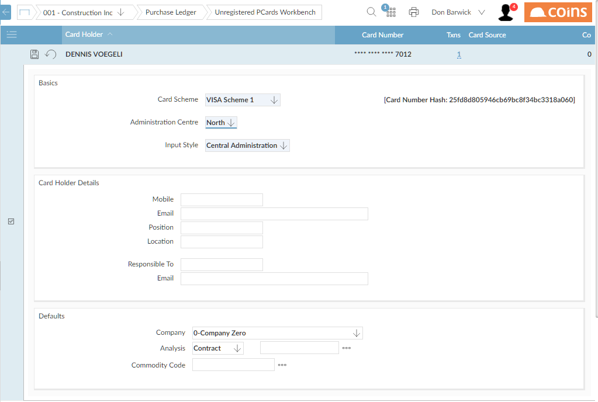

To register a new PCard:
- Go to Unregistered PCards Workbench.
- Open the unregistered PCard record.
Unregistered PCard Workbench
 - Fill in the details of the card scheme and who is responsible for administering the card (the card holder or central administration).
- Fill in details of the card holder.
- Click
 .
.
NOTE
A PCard belongs to a single administration
You can use PCard Maintenance to amend details of the PCard in future, or to add cards manually.